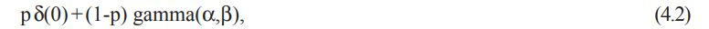
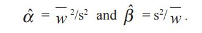
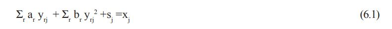
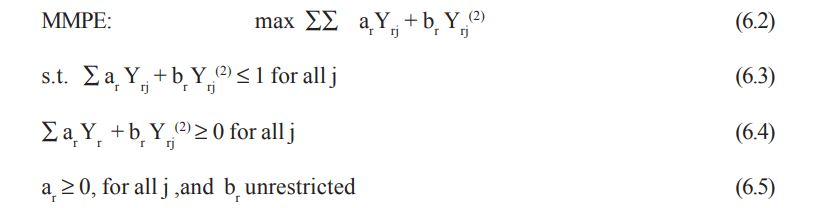

251to255
(3) If α < n/2, then ψ(x) is unbounded at its mode, µ, but may be more or less steep according to the value of β. We call this class the better-than-normal-like density class.
(4) If α > n/2, then ψ(x) has zero density at the target, µ, and low values throughout neighborhoods of µ. This suggests that attempts at the target are not effective. The data may have arisen in pursuit of a different target or simply not be effective for any target.
For densities in Category (3), the unbounded mode concentrates more probability near the target and suggests a higher level of expertise than that evidenced by the finite-at-mode N(µ,Σ) class. It seems reasonable to refer to α in this context as the expertise, mode, or target effectiveness parameter, while β is a scale or precision parameter. Thus, if α ≤ n/2, we call ψ(x) the normal-like-or-better performance density. To summarize, if attempts at a target set in n ℜ have a basic squared distance error measure and this measure is distributed with the gamma(α,β) density with α≤n / 2, then the performance with respect to this target set is normallike-or-better (NLOB).
We extend this target effectiveness criterion to the present context as follows. The target set is {Y∈ 4 ℜ : Σar Yr =1, Yr ≥ 0 for all r}. If Σar Yrj = vj, then the distance of Yrj from the target set is (1-v) Q%aQ%-1. Since 0 ≤ v ≤ 1, we employ the transformation w =(-ln v)2 = (ln v )2 . This transformation has the properties that w ≅ (1-v)2 near v=1 and w∈[0,∞). Therefore, w/Q%aQ%2 = (ln v)2 /Q%aQ%2 is an approximate squared distance measure near the target set. Since the Q%aQ%2 term is a scale factor, it can be absorbed into the β parameter of gamma(α,β). We therefore consider the NLOB effectiveness criterion to hold if w has the gamma(α,β) density with α ≤ 4 / 2 =2. That is, such performance is analogous to that of unbiased normallike-or-better distributed attempts at a target in n ℜ . There is one additional consideration before applying this effectiveness criterion to the present data. In the LP estimation model MPE, at least one efficiency, vj , must be unity (and hence wj = 0). This is because at least one constraint (2.6) must be active in an optimal solution of the MPE model. We therefore consider the model for the wj to be
where p is the frequency of zero values (here p = 3/62 = 0.048 from Table 1), and δ(0) is the degenerate density concentrated at w = 0. We call this the gamma-plus-zero density, gamma(α,β)+0 . For this data, we regard the NLOB criterion to hold if it holds for the gamma density in (4.2). When the gamma(α,β) density is fitted to the strictly positive w values, then NLOB requires that α ≤ 2. For the data of wj = (ln vj ) 2 based on Table 1, Column 7, the parameter value estimates obtained by the Method of Moments (see, for example, Bickell & Doksum, 1977) are α = 1.07 and β = 0.32. This method was chosen because the BESTFIT software experienced difficulty in convergence using its default Maximum Likelihood Estimation procedure. The Method of Moments estimates parameters by setting theoretical moments equal to sample moments. For the gamma(α,β) density, µ = αβ, and σ2 = αβ2 . If w and s2 are the sample mean and variance of the positive wj values, then the α and β estimates are given by
Tests of fit of the wj data to the gamma (α = 1.07, β = 0.32) density were carried out using the software BestFit (1995). All three tests provided in BestFit —the Chi-square, KolmogorovSmirnov, and the Anderson-Darling— indicated acceptance of the gamma model with confidence levels greater than 0.95. In addition, for each of these tests, the gamma model was judged best fitting (rank one) among the densities in the library of BestFit . We therefore conclude that the NLOB condition is met. Use of the NLOB criterion in this way may be regarded as somewhat stringent in that the zero data are only used to define the target and are not used to assess NLOB target effectiveness.
The NLOB criterion is important in establishing whether the estimated cost model is a plausible goal of the units being studied. The MPE model will produce estimates for any arbitrary set of Yrj data. However, if the resulting vj data were, for example, uniformly distributed on [0,1], there would be little confidence in the estimated model.
Limitations may be discussed for both the new estimation technique itself and for its application to the present context and data. In order to more fully parallel existing OLS theory for model aptness testing, attention should be given to potential outliers, independence of the vj , and constancy of the distribution of the vj from trial to trial (analogous to homoscedasticity in OLS theory; see, for example, Madansky, 1988, and Neter, Wasserman & Kutner, 1985). Theory developments for these issues are not yet available for the MPE model.
Hypothesis tests and confidence intervals for the estimates do not appear to be readily derivable from the proposed approach. However, information on their variances can be obtained by simulation using additional specific assumptions. As an illustration, 100 data sets of 62 observations each were simulated as follows. A value of vj was generated using the density model (4.2) and the estimates of p, α, and β. Then a vector, Yrj, was generated according to the uniform distribution on the convex polytope {Y:∑r ar *Yr = vj , Yr ≥ 0} where ar * is given by (3.4). Then the MPE model, (2.3)—(2.5) was solved for each data set and descriptive statistics for the estimates were obtained. Additional details on the simulation steps are given in the Appendix. The results are shown in Table 3.
Table 3: Descriptive statistics estimated from 100 simulated data sets
| Estimate | a*1 | a*2 | a*3 | a*4 |
|---|---|---|---|---|
| Mean | 0.2687 | 0.0510 | 0.1446 | 0.1412 |
| Standard Deviation | 0.0625 | 0.0131 | 0.0314 | 0.0297 |
The proposed NLOB criterion is a strong standard for performance effectiveness. It requires that squared distance performance with respect to the target set be as good or better than that of unbiased multivariate normal-like performance with respect of a point target in n ℜ . A still weaker class of target effectiveness densities might be developed in further research by inclusion of a vector parameter corresponding to possible bias in the multivariate normal-like model
With regard to limitations of the methodology for the application setting and data used here, we discuss first the cost of unused capacity connection again. A cost of unused capacity in the Cooper and Kaplan (1992) sense, which can be denoted as sj ck, might coexist along with a cost of inefficiency, sj I, as used in the present chapter; so that sj = sj ck + sj I . The effect of such unused capacities, as distinct from costs of inefficiencies, on the present results would be to understate the true efficiencies. The approach taken with the MPE model is worstcase in the sense that when the sj ck are identifiable, the appropriate data adjustment would be xj ’= xj - sj ck and the average performance efficiency would be expected to be larger
Thanassoulis et al. (1987) also discuss what we have called comparability of these units. A concern was noted relative to activity four whose monetary driver level might have been affected by the prosperity of the community being served. That is, offices with above average community prosperity and corresponding activity four levels might be considered as being unfairly compared to the others. Other things being equal, units with an inappropriately inflated value of a driver level would be expected to exert heavy downward pressure on the corresponding estimate in model MPE. We believe this kind of incomparability should ideally be removed by some kind of normalization process such as division by a socio-economic index. For the sake of concentrating on essential features of the present technique and maintaining comparability with the results of Dyson and Thanassoulis (1988), we leave this level of detailed analysis beyond the scope of the chapter.
In the use of the NLOB criterion for this data, the α parameter was compared to n/2 when n=4 was chosen. This assumes that the Yr data are truly four-dimensional. The discussion of the data in Thanassoulis et al. (1987) suggested to us that units were free to emphasize or vary all four drivers with the possible exception of the fourth one. If this driver is regarded as not available for improvement by the units, then the data should be considered as threedimensional. In this case, the intended α would be compared with 1.5. Since αˆ =1.07, the NLOB criterion is still met by the data under this assumption.
This section discusses extensions to the three cases: (1) time-series data, (2) marginal cost-oriented basic cost models, and (3) single driver-single cost pool data.
Suppose the data Yrt are given over time periods indexed by t for a single business unit. Then the MPE model with index j replaced by t can be applied. First, it would be necessaryto adjust all the xt cost-pool figures and resulting Yrt data to reflect current dollars using a cost index. This assumes that the estimated ar * cost rates are in terms of current dollars. Next, these rates would be interpretable as follows. The estimated ar * in the current dollar timeseries case may be interpreted to be the cost rate vector achieved by the unit during its most efficient observation period or periods. The resulting vt suggest periods of more or less efficiency, and would be a useful source for self-study aimed at productivity and process improvements.
The comparability issue for the units under comparison should be easier to accept in this case. However, process or technology changes during the data time span could be problematical. A more complete discussion of limitations for this case is left for specific future applications
In addition to the NLOB effectiveness test, additional considerations can be brought to bear with respect to an improvement over time dimension. Effectiveness in this respect would be supported by establishing a significant fit of the vt data to a monotone increasing function of time, for example, the reciprocal of a learning curve. Over longer periods of times, learning curve patterns for the estimated gamma parameters could serve similarly. That is, decreasing α indicates improving target effectiveness, while decreasing β would indicate improving precision.
Both the time-series and cross-sectional versions of the MPE model can be adapted to nonlinear basic cost models with marginal cost features. For example, consider the original cross-sectional case, but using the basic cost model
Again s is interpreted as a possible inefficiency due to experiencing higher than benchmark ar and/or br values. The cost of service provided by activity r is ar * yr + br * yr 2 for efficient units. By differentiation, the marginal cost by this model for activity r becomes ar * + 2br *yr at the observed driver level. Defining new data elements Yrj (2) =y2 rj/xj , the modified MPE model becomes
The constraints (6.4) ensure that cost contributions can only be non-negative, even if some br is negative. In that case, the marginal rate is decreasing; if these coefficients are positive, the corresponding marginal rates are increasing. Here a quadratic basic cost model was used. More generally, other models with different marginal cost structures could be employed (e.g., Cobb-Douglas as in Noreen and Soderstrom, 1994).
The MPE model for this case simplifies to max ∑ a Yj , s.t. a Yj ≤ 1, for all j, and a ≥ 0. The solution of this model is clearly a* = min Yj -1 = min xj /yj . The NLOB criterion requires α* ≤ ½ in this case. If this condition fails to hold, then this minimum value may be unreasonably low, perhaps due to an outlier. Deletion of one or a few such tentative outliers would be well supported if the remaining data do, in fact, pass the NLOB test. Otherwise no credible ar estimate is forthcoming from the present method. It should be noted that the simulation method could also be employed for this case, provided the NLOB criterion is met.
DATA-MINING APPLICATIONS AND CONSIDERATIONS
Benchmark estimation models, such as those considered here, may also be called frontier regression models. The general application of these in data mining has been discussed in Troutt, Hu, Shanker, and Acar (2001). They are formed to explain boundary, frontier or optimal behavior rather than average behavior as, for example, in ordinary regression models. Such a model may also be called a ceiling model if it lays above all the observations or a floor model in the opposite case. The cost-estimation model of this chapter is a floor model since it predicts the best, i.e., lowest, cost units.
The model considered here is a cross-sectional one. Although data mining is ordinarily thought of from the perspective of mining data from within a single organization, benchmarking type studies must often involve comparisons of data across organizations. Benchmarking partnerships have been formed for this purpose as discussed in Troutt, Gribbin, Shanker, and Zhang (2000). Such benchmarking-oriented data mining might be extended in a number of directions. Potential applications include comparisons of quality and other costs, processing and set-up times, and employee turnover. More generally, benchmarking comparisons could extend to virtually any measure of common interest across firms or other entities, such as universities, states, and municipalities. In the example in this chapter, a simple cost model was used to explain best practice performance. More generally, best practice performance may depend on other explanatory variables or categories of interest to the firm. Discovery of such models, variables, and categories might be regarded as the essence of data mining. With techniques discussed here, the difference is the prediction of frontier rather than average performance. For example, interest often centers on best instances such as customers most responsive to mailings, safest drivers, etc.
However, cross-sectional applications of benchmark performance models do not necessarily depend on the multiple firm situations. Mining across all a firm’s customers can also be of interest. Consider a planned mail solicitation of a sales firm. For mailings of a given type, it is desirable to predict the set of most responsive customers so that it can be targeted. Similarly, a charitable organization may be interested in discovering how to characterize its best or worst supporters according to a model.
As noted above, under the topic of time-series data, such frontier models can be used within a single organization where the benchmarking is done across time periods. Models of this type might be used to mine for explanatory variables or conditions that account for